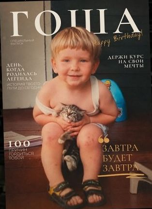
История жизни в подарок
Детские фото, «день, когда родилась легенда», сто причин гордиться, любимые фильмы и плейлист именинника.
3 500 / 4 500 ₽
Собираем журнал о вашем человеке: фотографии, смешные истории, любимые фразы и воспоминания. Он существует в одном экземпляре — и его не найти ни в одном магазине.
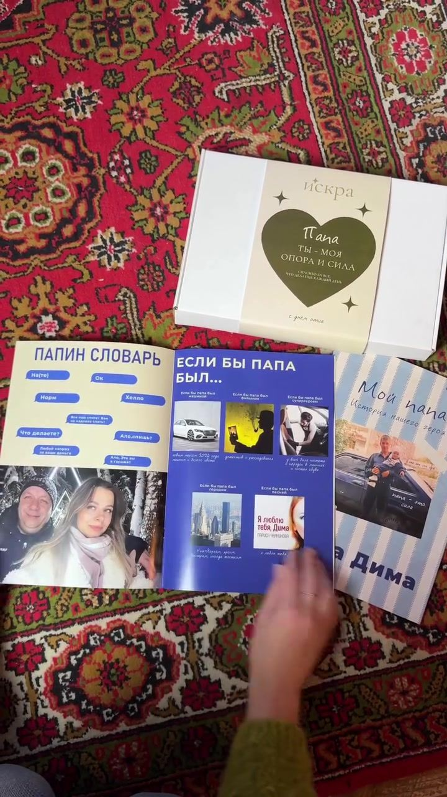
Маматы — мой самый тёплый дом
Откроется директ в Instagram, а текст заявки с именем и поводом уже будет скопирован — останется вставить.
Вы рассказываете нам о поводе и человеке, а мы превращаем ваши идеи в концепцию будущего журнала. Иногда достаточно одной фразы, чтобы родилась целая история.
Нажмите на корешок, чтобы достать журнал. Цена одна для всех тем: 3 500 ₽ за PDF и 4 500 ₽ за печатный.

Детские фото, «день, когда родилась легенда», сто причин гордиться, любимые фильмы и плейлист именинника.
3 500 / 4 500 ₽
Как познакомились, первое свидание, ваши словечки, поездки и мелочи, которые понятны только вам двоим. К годовщине, свадьбе или просто так.
3 500 / 4 500 ₽
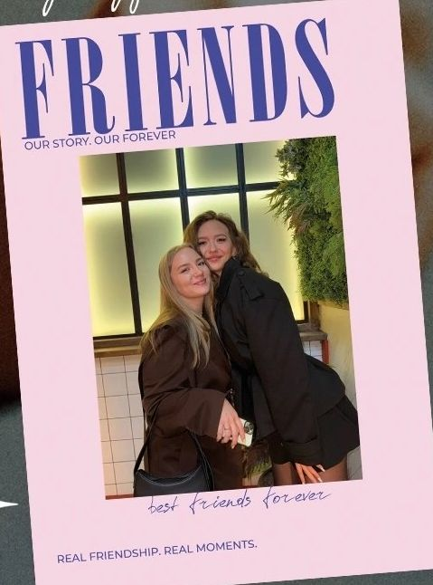
История знакомства, легендарные фразы, общие традиции и фотографии, над которыми вы смеётесь уже много лет.
3 500 / 4 500 ₽
Маршрут, билеты, случайные кафе, закаты и смешные кадры из дороги. Поездка, которая не потеряется в галерее телефона.
3 500 / 4 500 ₽
Первые дни дома, любимые места для сна, преступления против тапок и все те фото, которых у вас уже тысяча.
3 500 / 4 500 ₽
а ещё — маме, папе, бабушке, учителю, коллеге и даже себе
Каждый из них сделан про одного конкретного человека. Нажмите на разворот, чтобы рассмотреть поближе.
Special ко Дню матери: вступительное слово, знакомство с мамой, её коронные фразы, совместные воспоминания и два письма от дочерей.
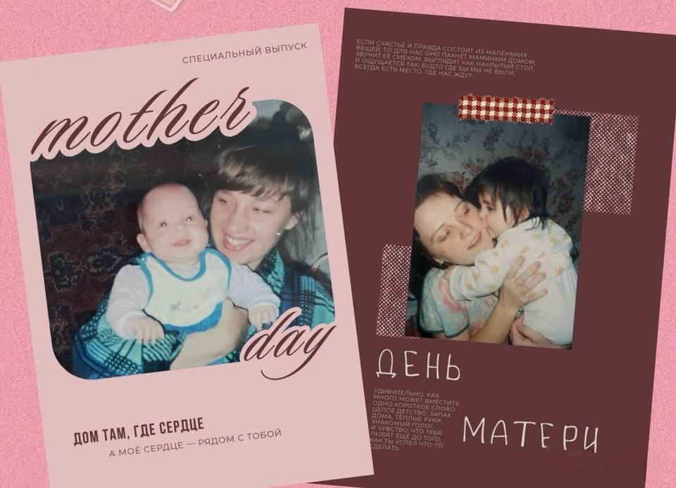
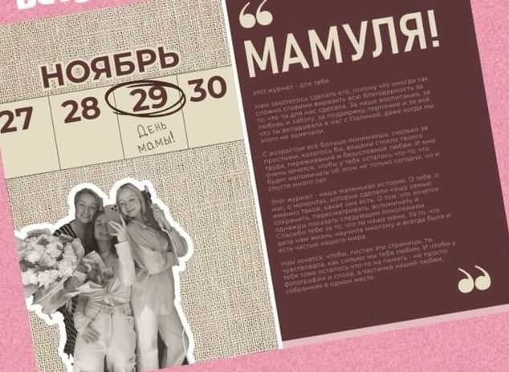
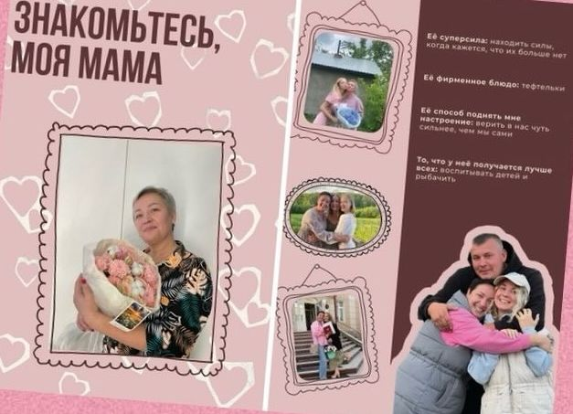
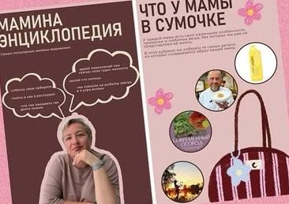
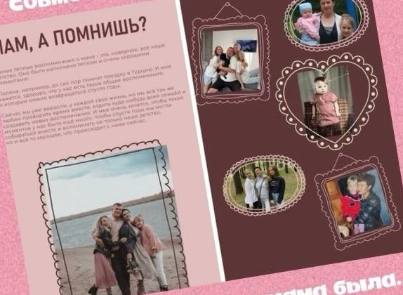
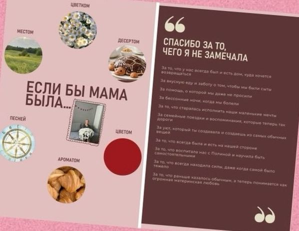
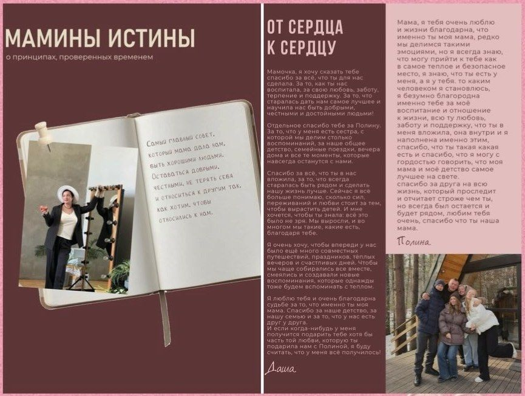
Журнал «Мой главный герой» в коробке с надписью «Папа, ты — моя опора и сила». Внутри — папин словарь, суперсилы и «если бы папа был…».
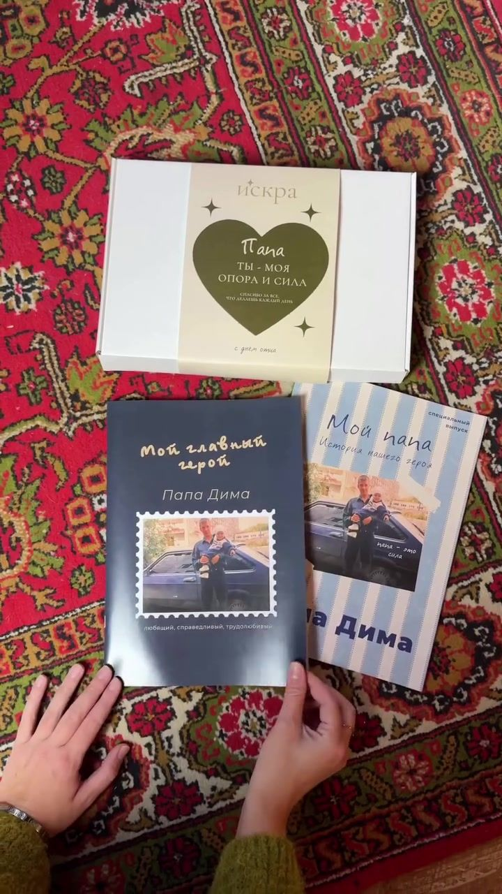
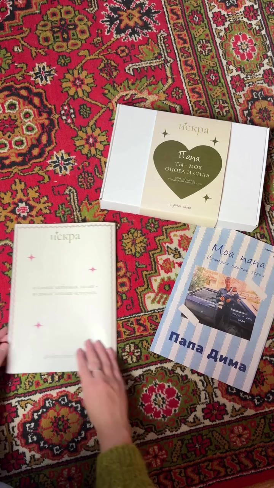
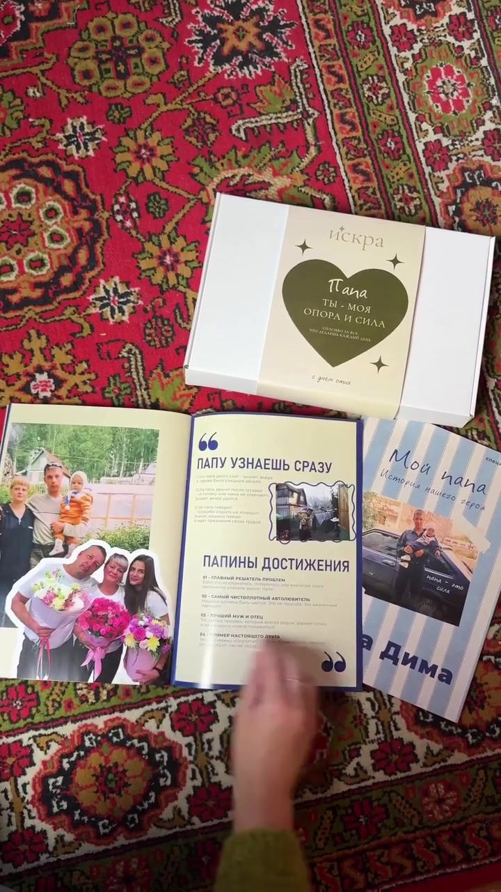
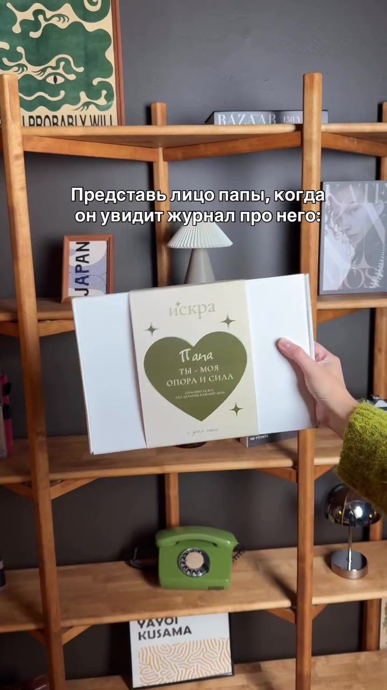
Журнал на день рождения: обложка с детским фото, любимые фильмы с цитатами и страница «Что слушает Гоша?» с плейлистом.
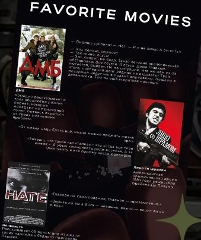
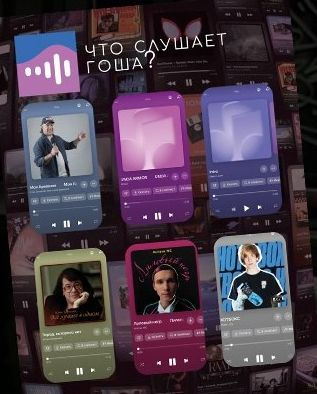
Happy birthday для Никиты: «просто классный, чилловый парень» на обложке и разворот «Who is that boy?» обо всём, что делает его им.
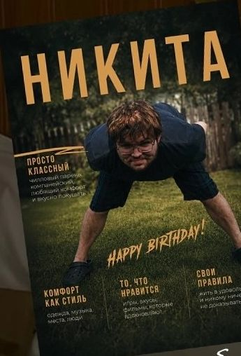
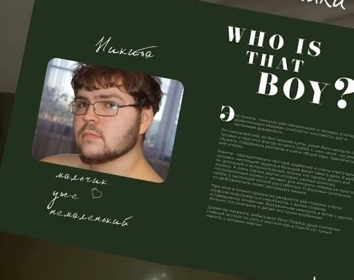
Friends story для двух подруг: «our story, our forever» на обложке и история знакомства, которая началась с одной детской площадки.
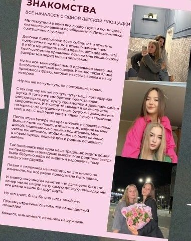
Плотные страницы, подарочная коробка с оливковым сердцем и надписью для вашего человека. Печатный вариант приходит готовым к вручению — останется только подарить.
Хочу печатный журналРубрики придумываем под человека. Вот несколько из тех, что уже стали страницами.
От первой фразы в директ до журнала в руках — шесть шагов. Ваша часть — рассказать и прислать фото, остальное делаем мы.
Рассказываете о поводе и человеке. Мы превращаем ваши идеи в концепцию будущего журнала.
Заполняете анкету и отправляете фотографии, смешные истории, любимые фразы и всё, что делает человека именно им. Мы ищем среди ответов самое важное.
Придумываем стиль, собираем композиции, добавляем тексты, мемы, факты, плейлисты и маленькие детали. Фотографии перестают быть просто фотографиями.
Показываем готовый макет. Смотрим каждую страницу, вносим правки и доводим до состояния, когда хочется сказать: «да, это он».
Если вы выбрали печатную версию, отправляем журнал в типографию и упаковываем в подарочную коробку.
Ваши фотографии, шутки, воспоминания и история — в одном журнале. Вещи со временем забываются. Истории остаются.
Раньше «Искру» можно было заказать только в PDF. По вашим просьбам появился готовый напечатанный журнал, который останется только подарить.
3 500 ₽
4 500 ₽
Электронный журнал в PDF — 3 500 ₽, печатный в подарочной упаковке — 4 500 ₽. Цена одинаковая для всех тем.
PDF готов до 5 дней, печатный журнал — до 7 дней. Срок считаем с момента, когда вы прислали анкету и фотографии. Если подарок к конкретной дате, напишите заранее — с учётом доставки.
Да, печатные журналы отправляем по всей России. Электронную версию присылаем файлом — её можно напечатать в любой типографии рядом с вами.
Заполнить анкету и прислать фотографии. Смешные истории, любимые фразы, плейлист, фильмы, воспоминания — всё, что делает человека именно им. Чем больше деталей, тем живее журнал.
Да. Мы показываем готовый макет, вместе смотрим каждую страницу и вносим правки до того, как журнал уйдёт в печать или вы получите PDF.
Напишите, о ком и к какому поводу журнал. Мы делали журналы маме, папе, друзьям, на день рождения — придумаем концепцию и под ваш случай.
отвечаем в Instagram @iskra.journal